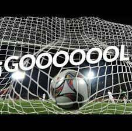

Historia do futebol
Como surgiu o futebol
O futebol é o esporte mais popular do mundo e suas origens remontam há 5 mil anos na China.
O futebol moderno surgiu na Inglaterra durante o século XIX. O futebol é considerado o esporte coletivo mais popular do mundo. O futebol é o esporte coletivo mais popular do planeta.
Objetivo desse Esporte
O futebol, disputado classicamente entre duas equipes, cada uma com 11 jogadores, que utilizam principalmente os pés e a cabeça para movimentar a bola em direção ao campo adversário, tem o objetivo de colocá-la dentro do GOL. A partida se divide em dois tempos de 45 minutos, com um intervalo de 15 minutos.
Bola de Ouro
Bola de Ouro (no original em francês Ballon d'Or) é um prêmio de futebol criado pela revista francesa France Football. A honraria já foi conhecida mundialmente como Futebolista do Ano na Europa, sendo entregue de forma independente entre 1956 e 2009 e novamente a partir de 2016, após fim da parceria com a Federação Internacional de Futebol (FIFA).
Em julho de 2010, foi anunciada a unificação do prêmio com o de "Melhor Jogador do Mundo pela FIFA", sendo entregue pela primeira vez em janeiro de 2011 e passando a ser chamado de "FIFA Ballon d'Or". O novo prêmio foi entregue ao melhor jogador do mundo de 2010 a 2015, quando a FIFA e a France Football romperam o acordo de fusão.
Desde 2016, a France Football voltou a realizar a entrega da Bola de Ouro e a FIFA criou o "The Best FIFA Football Awards"